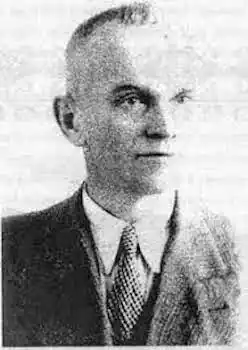

Мирослав Капій – український письменник, педагог, перекладач, фольклорист, історик, фантаст. Народився він 5 травня 1888 року на Тернопільщині в селі Коцюбинці в родині вчителів. Після Тернопільської гімназії навчався у Львівському університеті. Від початку навчання дуже зацікавився науковою та літературною творчістю, сам писав і публікував вірші.
Після закінчення університету продовжив династію батьків – вчителював у гімназії, педагогічній семінарії, школах. Був учасником національно-визвольних подій 1918-20рр., а під час польсько-українського конфлікту 1944 року вони з дружиною-полькою та донькою якимось дивом вціліли, засуджені до смерті польським підпіллям.
З найбільш помітних творів Капія слід відзначити науково-фантастичну повість "Країна блакитних орхідей" (1932), яка вже стала бібліографічною рідкістю. В ній дивним чином письменник передрікав багато з того, що відбувається зараз в Україні та у світі. Європу початку ХХІст. він бачив з багатьма маленькими незалежними мононаціональними країнами, Україну – науково та технічно високорозвиненою космічною державою з гетьманом на чолі (президент) та парламентом, який фактично править країною, її національну валюту – гривню, герб у вигляді тризуба, великий автозавод у Кременчуці (який збудовано у 1950-ті роки). Ця повість цікава ще й тим, що стала першим в українській літературі фантастичним твором на космічну тему. М.Капій став перекладачем на українську найвидатніших творців зарубіжної літератури: Шиллера, Гейне, Ібсена, Кіплинга. Зібрані ним величезний фольклорний матеріал, народні пісні, казки, легенди вражають своїми обсягами. З 1945 року письменник мешкав у Косові Івано-Франківської області, у власному будинку. Там і помер 24.03.1949р.